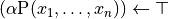

neurolang.probabilistic.expression_processing module¶
- neurolang.probabilistic.expression_processing.add_to_union(union, to_add)¶
Extend Union with another Union or an iterable of Expression.
- Parameters
- union: Union
The initial Union to which expressions will be added.
- to_add: Unino or Expression iterable
Expression`s to be added to the `Union.
- Returns
- new_union: Union
A new Union containing the new expressions.
- neurolang.probabilistic.expression_processing.build_probabilistic_fact_set(pred_symb, pfacts)¶
- neurolang.probabilistic.expression_processing.check_probabilistic_choice_set_probabilities_sum_to_one(ra_set)¶
- neurolang.probabilistic.expression_processing.const_or_symb_as_python_type(exp)¶
- neurolang.probabilistic.expression_processing.construct_within_language_succ_result(provset, rule)¶
- neurolang.probabilistic.expression_processing.get_probchoice_variable_equalities(predicates, pchoice_pred_symbs)¶
Infer variable equalities from repeated probabilistic choice predicates.
- Parameters
- predicatesiterable of predicates
Predicates that are part of a conjunction.
- pchoice_pred_symbsiterable of predicate symbols
Predicate symbols associated with probabilistic choices.
- Returns
- set of pairs of symbol variables
Each pair in the set represents the equality between two variables. Variables within the pair are sorted in lexicographical order.
Notes
A probabilistic choice encodes mutually exclusive random events. Let P be the predicate symbol of a probabilistic choice. The conjunction P(x), P(y) can only be true if x == y.
- neurolang.probabilistic.expression_processing.get_within_language_prob_query_prob_term(implication)¶
- neurolang.probabilistic.expression_processing.group_preds_by_functor(predicates, filter_set=None)¶
Group predicates by their functor.
An optional filter set of functors can be passed to only return the ones in the set.
- Parameters
- predicatesiterable of predicates
Predicates that should be grouped.
- filter_setset of functors (optional)
Functors to consider.
- Returns
- dict of functors to set of predicates
- neurolang.probabilistic.expression_processing.group_probabilistic_facts_by_pred_symb(union)¶
- neurolang.probabilistic.expression_processing.is_builtin(pred, known_builtins=None)¶
- neurolang.probabilistic.expression_processing.is_probabilistic_fact(expression)¶
Whether the expression is a probabilistic fact.
Notes
In CP-Logic [1], a probabilistic fact is seen as a CP-event

with a single atom in its head which is true with probability
 .
.- 1
Vennekens, Joost, Marc Denecker, and Maurice Bruynooghe. “CP-Logic: A Language of Causal Probabilistic Events and Its Relation to Logic Programming.” Theory and Practice of Logic Programming 9, no. 3 (May 2009): 245–308. https://doi.org/10.1017/S1471068409003767.
- neurolang.probabilistic.expression_processing.is_probabilistic_predicate_symbol(pred_symb, program)¶
- neurolang.probabilistic.expression_processing.is_query_based_probfact(expression)¶
- neurolang.probabilistic.expression_processing.is_within_language_prob_query(implication)¶
- neurolang.probabilistic.expression_processing.lift_optimization_for_choice_predicates(query, program)¶
Replace multiple instances of choice predicates by single instances enforncing the definition that the probability that two different grounded choice predicates are mutually exclusive.
- Parameters
- querypredicate or conjunction of predicates
The query for which the conjunction is constructed.
- programa program with a probabilistic database.
Program with logical rules that will be used to construct the conjunction corresponding to the given query.
- Returns
- Conjunctive query
conjunctive query rewritten for choice predicate implementation.
- neurolang.probabilistic.expression_processing.separate_deterministic_probabilistic_code(program, query_pred=None, det_symbols=None, prob_symbols=None)¶
- neurolang.probabilistic.expression_processing.union_contains_probabilistic_facts(union)¶
- neurolang.probabilistic.expression_processing.within_language_succ_query_to_intensional_rule(rule)¶